Alignment line plots, whole genomes
Charles Plessy
24 October, 2023
Source:vignettes/OxfordPlots.Rmd
OxfordPlots.Rmd
knitr::opts_chunk$set(cache = TRUE,
dev = c('png', 'svg', 'pdf'),
fig.ext= c('png', 'svg', 'pdf'),
fig.width = 15,
fig.heigth = 15)Introduction
This vignette produces alignment line plots of pairs of genomes to illustrate differences in the extent of scrambling in Oikopleura compared to equivalent pairs in other genera.
Figure 1 panel A was generated in this vignette.
Load R pacakges and data
library('OikScrambling') |> suppressPackageStartupMessages()
ggplot2::theme_set(theme_bw())
genomes <- OikScrambling:::loadAllGenomes()## Warning in runHook(".onLoad", env, package.lib, package): input string
## 'Génoscope' cannot be translated from 'ANSI_X3.4-1968' to UTF-8, but is valid
## UTF-8
## Warning in runHook(".onLoad", env, package.lib, package): input string
## 'Génoscope' cannot be translated from 'ANSI_X3.4-1968' to UTF-8, but is valid
## UTF-8
load("BreakPoints.Rdata")Oikopleura
Fig 1A
Line plot used for panel A of Figure 1. Is based on aligned regions
(before coalescing), stored in the gbs object. The manually
set colors are used throughout the manuscript to represent chromosomes 1
and 2, the PAR, the XSR and the YSR.
makeOxfordPlots(gbs$Oki_Osa, diag = FALSE) +
scale_color_manual(values = c("#E78AC3", "#A6D854", "#FFD92F", "#8DA0CB", "#66C2A5")) +
theme_bw() +
theme(legend.position="none")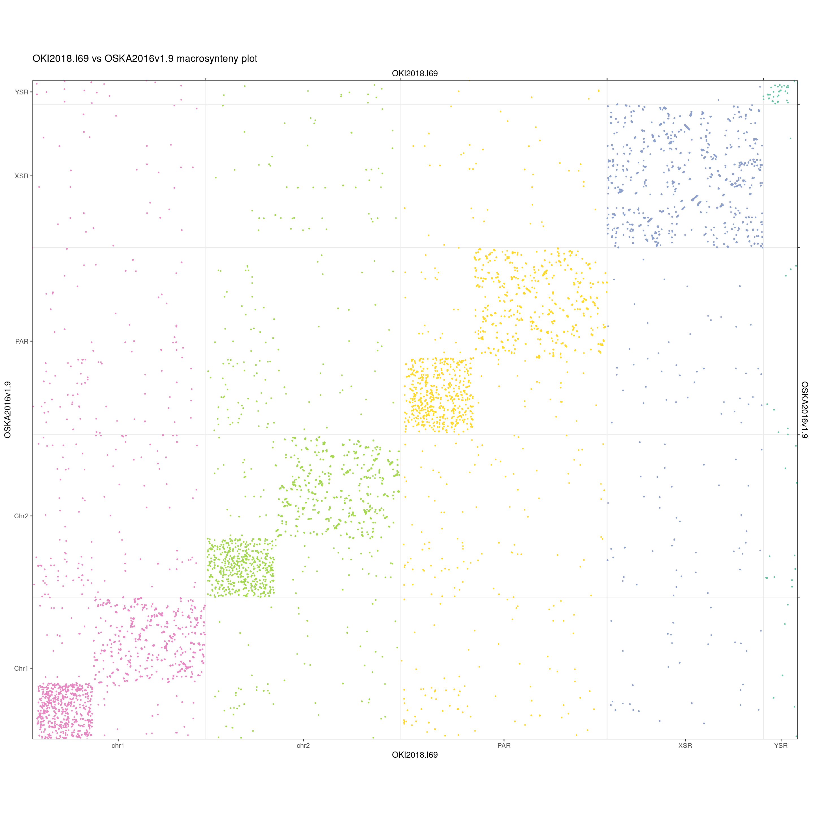
Okinawa vs others
Oki vs Osa (distant)
Same as above, but colored by strand.
makeOxfordPlots(gbs$Oki_Osa, diag = FALSE, col = "strand") + theme(legend.position="none")
Oki vs Bar (distant)
makeOxfordPlots(gbs$Oki_Bar, diag = FALSE, col = "strand") + theme(legend.position="none")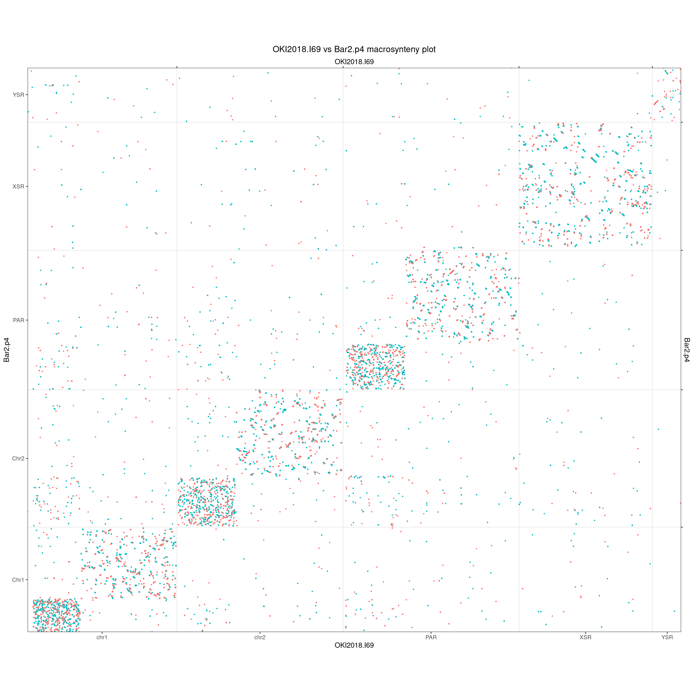

Osaka vs others
Osa vs Oki (distant)
makeOxfordPlots(gbs$Osa_Oki, diag = FALSE, col = "strand") + theme(legend.position="none")Osa vs Bar (intermediate)
makeOxfordPlots(gbs$Osa_Bar, diag = FALSE, col = "strand") + theme(legend.position="none")

Barcelona vs others
Bar vs Oki (distant)
makeOxfordPlots(gbs$Bar_Oki, diag = FALSE, col = "strand") + theme(legend.position="none")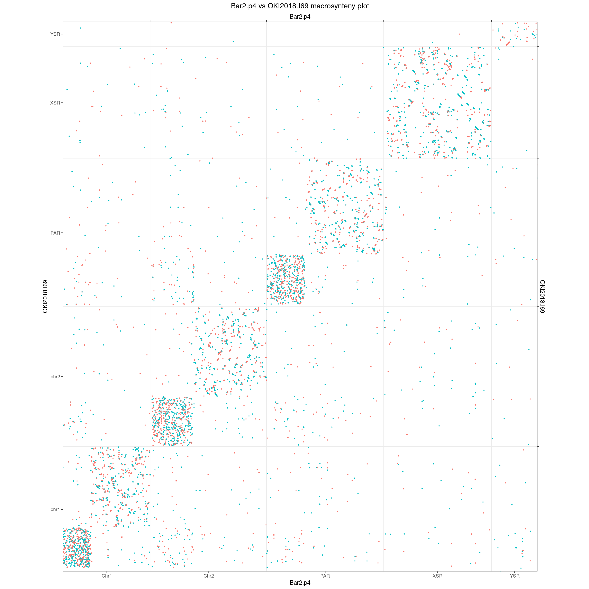
Bar vs Osa (intermediate)
makeOxfordPlots(gbs$Bar_Osa, diag = FALSE, col = "strand") + theme(legend.position="none")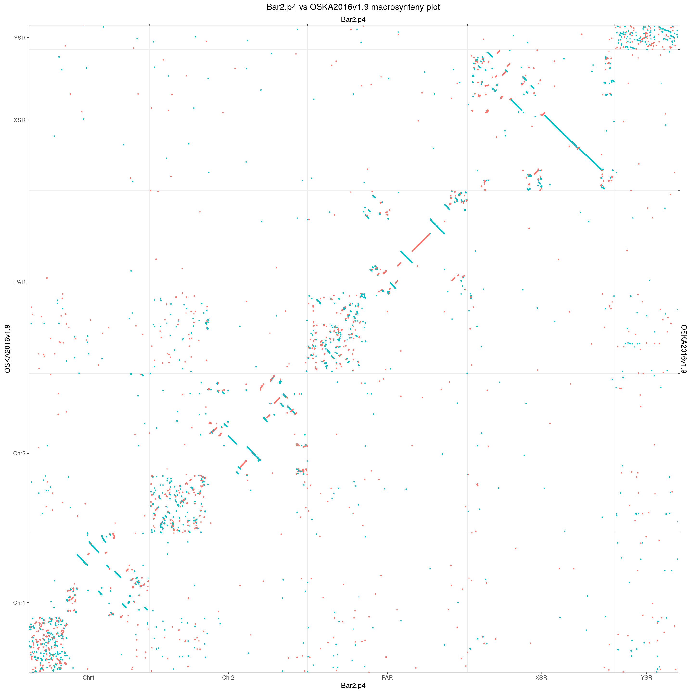
Bar vs Nor (near)
In these vignettes, the manuscript’s “Bergen” genome is called “Norway”.
Note this plot does not demonstrate, nor rule out, collinearity between the two genomes, because most contigs of the Bergen assembly are too short. Alignment on the diagonal only demonstrates collinearity within a contig, not between.
makeOxfordPlots(gbs$Bar_Nor, col = "strand") + theme(legend.position="none")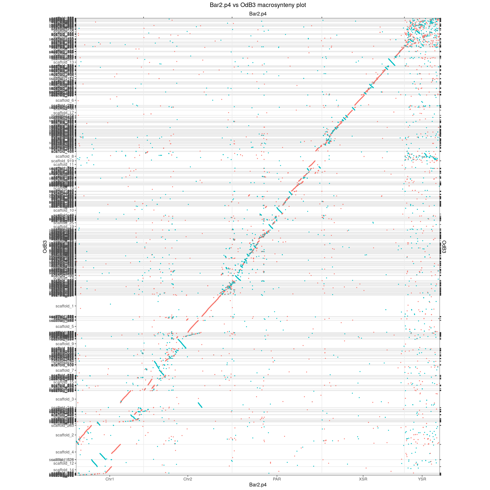
Ciona
Ciona intestinalis Plymouth vs Roscoff (near)
makeOxfordPlots(gbs$Ply_Ros, col = "strand") + theme(legend.position="none") + ggtitle("Ciona intestinalis Plymouth vs Roscoff")
Ciona intestinalis Plymouth vs Ciona robusta (intermediate)
makeOxfordPlots(gbs$Ply_Rob, col = "strand") + theme(legend.position="none") + ggtitle("Ciona intestinalis Plymouth vs Ciona robusta")
Ciona intestinalis Plymouth vs Ciona savignyi (distant)
makeOxfordPlots(gbs$Ply_Sav, col = "strand") + theme(legend.position="none") + ggtitle("Ciona intestinalis Plymouth vs Ciona savignyi")Drosophila
vs Drosophila mauritania (near)
makeOxfordPlots(gbs$Dme_Dma, col = "strand") + theme(legend.position="none") + ggtitle("Dmel vs Dmau")
vs Drosophila yakuba (intermediate)
makeOxfordPlots(gbs$Dme_Dya, col = "strand") + theme(legend.position="none") + ggtitle("Dmel vs Dyak")
vs Drosophila subpulchrella (intermediate)
makeOxfordPlots(gbs$Dme_Dsu, col = "strand") + theme(legend.position="none") + ggtitle("Dmel vs Dsub")
vs Drosophila buskii (distant)
makeOxfordPlots(gbs$Dme_Dbu, col = "strand") + theme(legend.position="none") + ggtitle("Dmel vs Dbus")
Nematodes
C. briggsae vs C. nigoni (near)
makeOxfordPlots(gbs$Cbr_Cni, col = "strand") + theme(legend.position="none") + ggtitle("C. briggsae vs C. nigoni")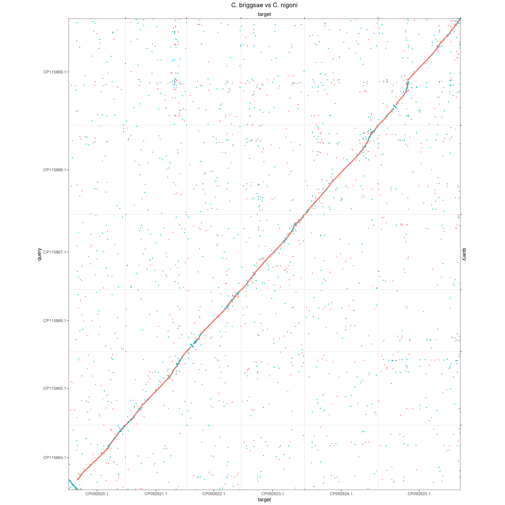
C. briggsae vs C. remanei (intermediate)
makeOxfordPlots(gbs$Cbr_Cre, col = "strand") + theme(legend.position="none") + ggtitle("C. briggsae vs C. remanei")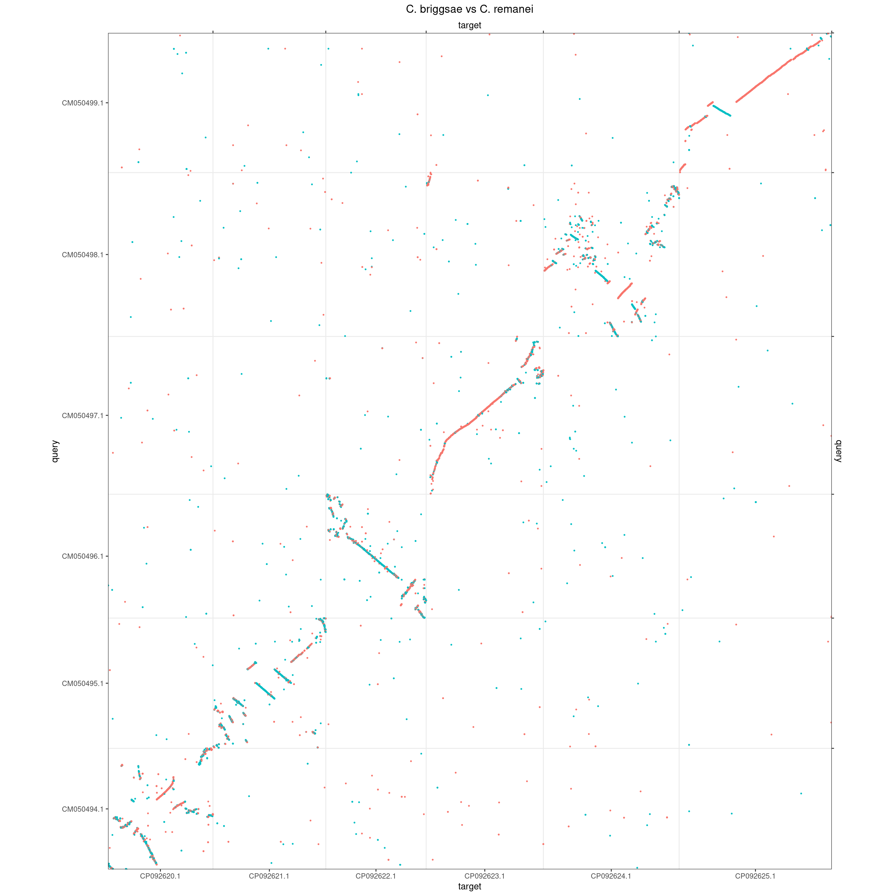
C. nigoni vs C. remanei (intermediate)
makeOxfordPlots(gbs$Cni_Cre, col = "strand") + theme(legend.position="none") + ggtitle("C. nigoni vs C. remanei")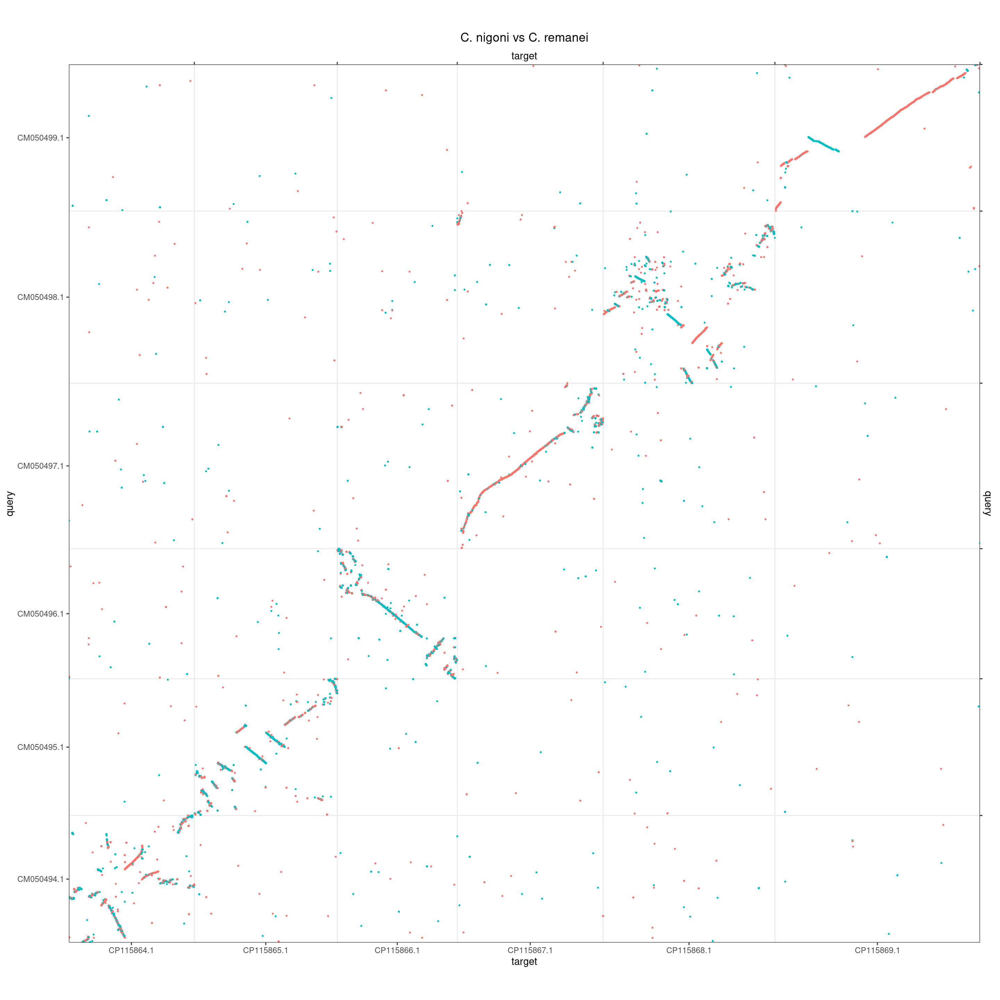
C. briggsae vs C. elegans (distant)
makeOxfordPlots(gbs$Cbr_Cel, col = "strand") + theme(legend.position="none") + ggtitle("C. briggsae vs C. elegans")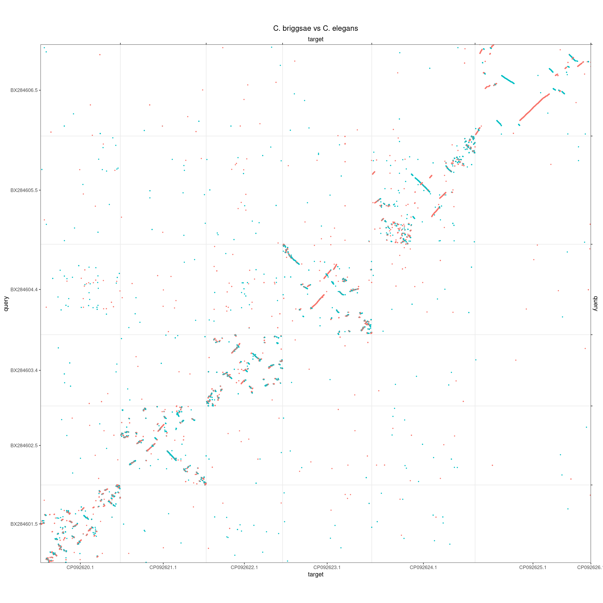
C. nigoni vs C. inopinata (distant)
makeOxfordPlots(gbs$Cni_Cin, col = "strand") + theme(legend.position="none") + ggtitle("C. nigoni vs C. inopinata")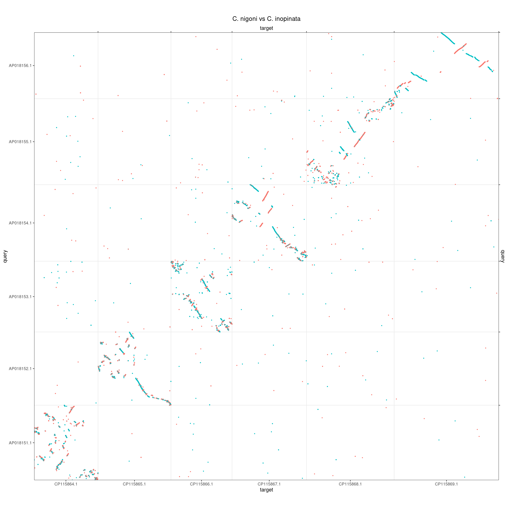
Mammals
Human versus mouse chromosome 18
Chromosome 18 was chosen because it is small and it has the same name in both species. Region was centered on the alignment with the longest width, as otherwise the window out of target.
Note that each of these chromosomes is longer than any Oikopleura dioica genome.
hgmm <- load_genomic_breaks(system.file(("extdata/hg38_mm10/hg38_chr18__mm10_chr18.gff3"), package = "BreakpointsData"))
makeOxfordPlots(hgmm, col = "strand") + ggtitle("Homo sapiens vs Mus musculus")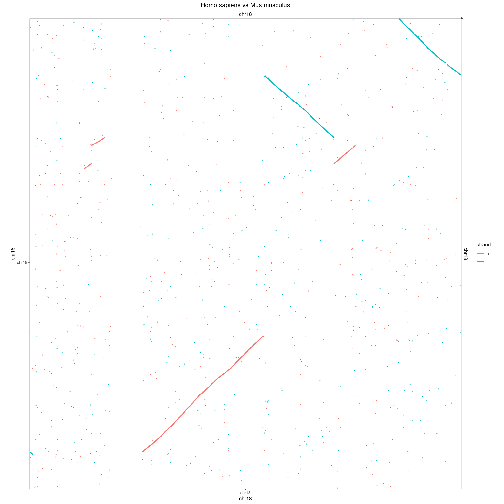
Muntjaks
Mmun_Mree <- load_genomic_breaks(system.file("extdata/Muntjaks/Rrev_Rmun.07.postmasked.gff.gz", package = "BreakpointsData"), type = "match")
makeOxfordPlots(Mmun_Mree |> swap(), col = "strand") + ggtitle("Muntiacus reevesi vs Muntiacus muntjak")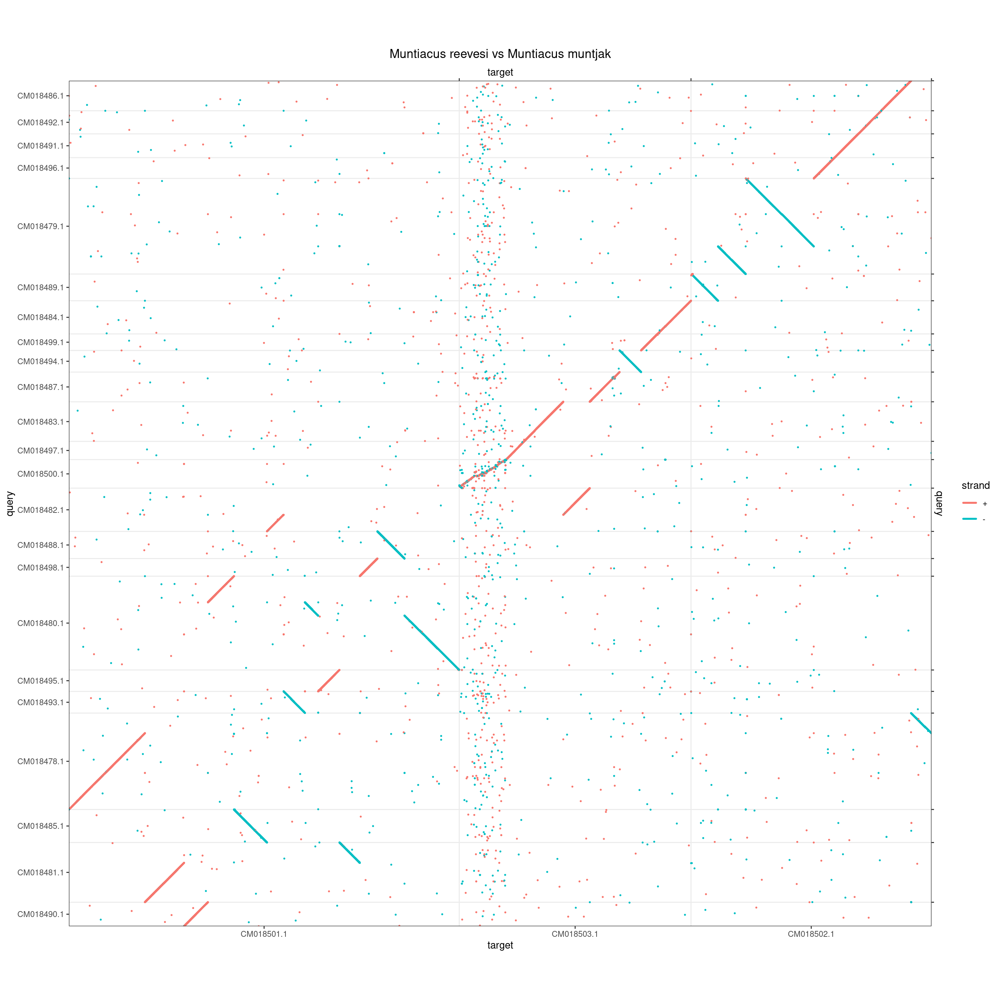